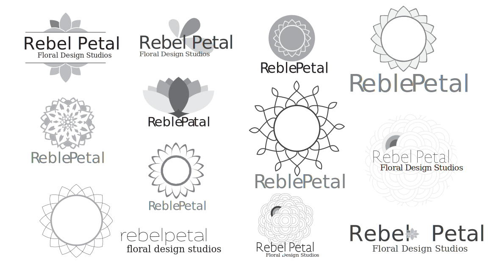

Rebel Petal
Logo & Brand Identity
Role
Graphic Design
Challenge
I was working on this project during an internship at Cayenne Creative. Several designers, including myself, presented concepts and mine was chosen by the client. The project was to create a logo and brand for a local flower shop based out of Manotick. The owner wanted to express her personality; Non-traditional, funky and a little rebellious. With a name like Rebel Petal, the brand needed to have that same edge.
Solution
Process
The client showed us an example of a business card that she liked. It was circular with a mandala on it.....Write more!
Sketches
Different Concepts
Final Steps
This was the final product, before fixing up small details. We decided, as a team, that the filled in petal and the cutout on the wordmark was unneeded to portray the feel of the company. So we simply took it all out. This left us with an elegant yet edgy logo. And the client loved it!
The flower has pointed ends and sharp corners, for edginess and a sans serif font, with slight curves, to mirror the curves of the flower. I put the more traditional serif font in for contrast, and to add a little femininity and formality.